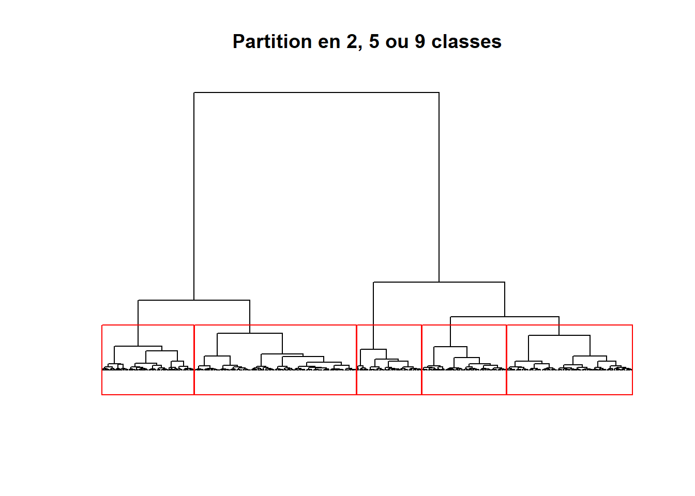

8.2 Méthodes de classification non supervisée avec une dimension spatiale
Nous avons vu que les méthodes de classification avec une contrainte spatiale visent à obtenir des régions non discontinues, c’est-à-dire sans mitage spatial. L’objectif des méthodes de classification non supervisée avec une dimension spatiale est quelque peu différent : classifier les observations en tenant compte de l’espace (proximité, voisinage entre les unités spatiales) afin de limiter les effets de mitage, sans obtenir toutefois l’interdire.
Dans le cadre de cette section, nous décrivons deux de ces méthodes qui intègrent la dimension spatiale de manière différente :
La méthode ClustGeo, qui est une extension de la classification ascendante hiérarchique, est une méthode de classification non supervisée, spatiale et stricte. Cette méthode repose sur deux matrices de dissimilarité : une matrice sémantique calculée sur les valeurs de plusieurs variables caractérisant les entités géographiques et une matrice de distances (euclidienne le plus souvent) entre les entités géographiques. Nous cherchons ainsi à regrouper les observations qui se ressemblent à la fois selon leurs attributs et selon leur proximité spatiale.
La méthode k-moyennes spatiale et floue (Spatial fuzzy c-means), qui est une extension de la méthode k-moyennes, est une méthode de classification non supervisée, spatiale et floue. Cette méthode repose sur deux matrices de dissimilarité : une matrice sémantique calculée sur les valeurs de plusieurs variables caractérisant les entités géographiques et une matrice sémantique spatialement décalée. Nous cherchons ainsi à regrouper les observations qui se ressemblent à la fois selon leurs caractéristiques et celles de leurs unités spatiales adjacentes ou proches.
Autrement dit, dans la méthode ClustGeo, l’espace est introduit sous la forme d’une matrice de distances entre les entités spatiales (agencement spatial) tandis que dans la méthode du Spatial fuzzy c-means, il est introduit sous la forme d’une matrice de données sémantiques spatialement décalées (information sémantique dans l’environnement immédiat).
8.2.1 Classification ascendante hiérarchique spatiale (ClustGeo)
8.2.1.1 Description de la méthode ClustGeo
La méthode ClustGeo, proposée par Marie Chavent et ses collègues (2018), est une extension de la classification ascendante hiérarchique (CAH) qui intègre la dimension spatiale des entités géographiques. Cette méthode repose sur une idée brillante, soit de classer (regrouper) les observations (unités spatiales) en utilisant deux matrices de dissimilarité :
- Une matrice sémantique calculée sur p variables caractérisant les unités spatiales (\(D_0\)).
- Une matrice spatiale calculée à partir des distances euclidiennes entre les unités spatiales (\(D_1\)).
Notez qu’un paramètre \(\alpha\), variant de 0 à 1, permet de définir le poids de la matrice spatiale comparativement à celui de la sémantique :
- Avec \(\alpha=0\), le poids accordé à la matrice spatiale est nul. Nous obtenons ainsi une CAH classique.
- Avec \(\alpha=1\), le poids accordé à la matrice spatiale est maximal; la classification est alors purement spatiale.
Par conséquent, « […] l’enjeu principal est de fixer la valeur du paramètre 𝛼, considérant qu’une augmentation de 𝛼 revient à améliorer l’inertie expliquée de la matrice spatiale, au détriment d’une perte de l’inertie expliquée sur le plan sémantique » (Gelb et Apparicio 2021, 16).
8.2.1.2 Calcul de la CAH classique
Retour sur la classification ascendante hiérarchique (CAH)
Pour une description détaillée de la CAH, consultez la section suivante (Apparicio et Gelb 2022).
Le code ci-dessous permet de déterminer l’arbre de classification selon le critère de Ward à partir de la matrice sémantique.
## Variables pour la CAH
VarsEnv <- c("Lden", "NO2", "PM25", "VegHautPrt")
## Dataframe sans la géométrie et les quatre variables
load("data/chap08/DonneesLyon.Rdata")
Data <- st_drop_geometry(LyonIris[VarsEnv])
## Centrage (moyenne = 0) et réduction des données (variance = 1)
DataZscore <- data.frame(scale(Data))
## Matrice sémantique : dissimilarité des observations selon les variables
Matrice.Semantique <- dist(DataZscore, method = "euclidean")
# Calcul du dendrogramme avec le critère WARD
Arbre <- hclust(Matrice.Semantique, method = "ward.D")
plot(Arbre, hang = -1, label = FALSE,
main = "Dendrogramme \n(arbre de classification selon le critère de Ward)",
sub = "", ylab = "Hauteur", xlab = ""
)
À la lecture de la figure 8.9, nous ne détectons pas de seuils marqués dans l’inertie expliquée en fonction du nombre de groupes. Par conséquent, nous fixons arbitrairement le nombre de groupes à 5.
library(ggplot2)
# Fonction pour l'inertie expliquée par les classes
prop_inert_cutree <- function(K,tree,n){
P <- cutree(tree,k=K)
W <- sum(tree$height[1:(n-K)])
Tot <- sum(tree$height)
return(1-W/Tot)
}
# Inertie expliquée par des CAH de 2 à 10 classes
df.inertie <- data.frame(NGroupes = 2:10,
Inertie = sapply(2:10,
prop_inert_cutree,
tree=Arbre,
n=nrow(DataZscore)))
ggplot(df.inertie)+
geom_line(aes(x=NGroupes,y=Inertie))+
geom_point(aes(x=NGroupes,y=Inertie), color = "red") +
labs(y = "Inertie expliquée", x = "Nombre de groupes")Figure 8.9: Méthode du coude reposant sur l’inertie expliquée pour CAH
Nous pouvons visualiser l’arbre avec une coupure à cinq classes.
plot(Arbre, labels = FALSE,
main = "Partition en 2, 5 ou 9 classes",
xlab = "", ylab = "", sub = "", axes = FALSE, hang = -1)
rect.hclust(Arbre, 5, border = "red")
## Coupure de l'arbre à cinq classes
LyonIris$CAH5 <- as.character(cutree(Arbre, k=5))
## Nombre d'observations par classe
table(LyonIris$CAH5)##
## 1 2 3 4 5
## 62 120 88 81 155## Valeurs moyennes des classes
aggregate(cbind(Lden,NO2,PM25,VegHautPrt) ~ CAH5, data = st_drop_geometry(LyonIris), FUN = mean)## CAH5 Lden NO2 PM25 VegHautPrt
## 1 1 49.52246 19.11011 13.84968 34.64694
## 2 2 54.57170 22.29326 15.17248 12.34458
## 3 3 62.53950 37.18071 18.25763 18.25330
## 4 4 55.21535 25.85652 15.83278 26.67333
## 5 5 55.08405 34.17193 18.90686 13.44716Les résultats de la CAH sont cartographiés à la figure 8.10 tandis que le nombre d’observations et les valeurs moyennes des classes sont reportés tableau 8.2.
library(tmap)
## Cartographie des résultats
Carte.CAH5 <- tm_shape(LyonIris)+tm_borders(col="gray", lwd=.5)+
tm_fill(col="CAH5", palette = "Set1", title ="")+
tm_layout(frame=FALSE,
main.title = "CAH (critère de Ward)",
main.title.position = "center",
main.title.size = 1)
Carte.CAH5Figure 8.10: CAH avec le critère de Ward avec cinq classes
| Classe | Lden | NO2 | PM25 | Végétation | Nombre d’IRIS |
|---|---|---|---|---|---|
| 1 | 49,5 | 19,1 | 13,8 | 34,6 | 62 |
| 2 | 54,6 | 22,3 | 15,2 | 12,3 | 120 |
| 3 | 62,5 | 37,2 | 18,3 | 18,3 | 88 |
| 4 | 55,2 | 25,9 | 15,8 | 26,7 | 81 |
| 5 | 55,1 | 34,2 | 18,9 | 13,4 | 155 |
8.2.1.3 Calcul de la méthode ClustGeo
Calcul des deux matrices (sémantique et spatiale)
Dans un premier temps, nous créons les matrices sémantique (\(D_0\)) et spatiale (\(D_1\)).
library(sf)
library(ClustGeo)
## Variables
VarsEnv <- c("Lden", "NO2", "PM25", "VegHautPrt")
## Dataframe sans la géométrie et les quatre variables
load("data/chap08/DonneesLyon.Rdata")
Data <- st_drop_geometry(LyonIris[VarsEnv])
## Centrage (moyenne = 0) et réduction des données (variance = 1)
DataZscore <- data.frame(scale(Data))
## Matrice sémantique : dissimilarité des observations selon les variables
Matrice.Semantique <- dist(DataZscore, method = "euclidean")
## Matrice spatiale entre les unités spatiales
xy <- st_coordinates(st_centroid(LyonIris))
Matrice.Spatiale <- dist(xy, method = "euclidean")Optimisation de la valeur de \(\alpha\)
Pour la méthode ClustGeo (avec k = 5), nous évaluons l’impact du paramètre α pour des valeurs de 0 à 1, avec un saut de 0,05. Pour ce faire, nous utilisons la fonction choicealpha du package ClustGeo. À la lecture de la figure 8.11, nous constatons que :
plus la valeur de \(\alpha\) augmente, plus l’inertie expliquée par la matrice sémantique diminue (trait noir) et inversement, plus l’inertie expliquée par la matrice spatiale est forte.
avec \(\alpha=\text{0,30}\), l’inertie expliquée par la matrice spatiale est de 50 % pour une perte d’inertie expliquée par la matrice sémantique de seulement 7 %. Avec \(\alpha=\text{0,35}\), nous constatons une chute importante de l’inertie sémantique expliquée.Par conséquent, nous retenons la valeur de 0,30 pour la méthode ClustGeo.
alphas <- seq(0, 1, 0.05)
result <- choicealpha(D0 = Matrice.Semantique, # matrice sémantique
D1 = Matrice.Spatiale, # matrice spatiale
range.alpha = alphas, # valeurs de alpha
K = 5, # nombre de classes
wt = NULL, scale = TRUE, graph = FALSE)
# Graphique avec Alpha
df.alpha <- data.frame(result$Q)
df.alpha$alpha <- alphas
ggplot(df.alpha)+
geom_line(aes(x=alphas,y= Q0), color = "black")+
geom_point(aes(x=alphas,y= Q0), color = "black", size=3) +
geom_line(aes(x=alphas,y= Q1), color = "red")+
geom_point(aes(x=alphas,y= Q1), color = "red", size=3) +
labs(y = "Pseudo-inertie",
x = "Paramètre alpha",
subtitle = "Matrice sémantique (noir) et matrice spatiale (rouge)")Figure 8.11: Impact des deux matrices dans la classification
Réalisation de la méthode ClustGeo
## Dendrogramme avec ClustGeo
Arbre.ClustGeo <- hclustgeo(D0 = Matrice.Semantique, D1 = Matrice.Spatiale, alpha = 0.30)
## Coupure de l'arbre à cinq classes
LyonIris$ClustGeo5 <- as.character(cutree(Arbre.ClustGeo, k=5))
## Nombre d'observations par classe
table(LyonIris$ClustGeo5)##
## 1 2 3 4 5
## 101 73 102 145 85## Valeurs moyennes des classes
aggregate(cbind(Lden,NO2,PM25,VegHautPrt) ~ ClustGeo5,
data = st_drop_geometry(LyonIris), FUN = mean)## ClustGeo5 Lden NO2 PM25 VegHautPrt
## 1 1 51.99446 22.63948 14.69971 32.70396
## 2 2 55.46789 20.84670 15.00392 14.07849
## 3 3 61.41468 36.20785 18.23707 18.77059
## 4 4 54.98927 34.16558 18.93142 12.84883
## 5 5 54.05419 24.32165 15.45733 16.14224## Cartographie des résultats
Carte.ClusteGeo <- tm_shape(LyonIris)+tm_borders(col="gray", lwd=.5)+
tm_fill(col="ClustGeo5", palette = "Set1", title ="")+
tm_layout(frame=FALSE,
main.title = "ClustGeo avec alpha = 0,30",
main.title.position = "center",
main.title.size = 1)
Carte.ClusteGeoFigure 8.12: Classification ClustGeo avec alpha = 0,30
| Classe | Lden | NO2 | PM25 | Végétation | Nombre d’IRIS |
|---|---|---|---|---|---|
| 1 | 52,0 | 22,6 | 14,7 | 32,7 | 101 |
| 2 | 55,5 | 20,8 | 15,0 | 14,1 | 73 |
| 3 | 61,4 | 36,2 | 18,2 | 18,8 | 102 |
| 4 | 55,0 | 34,2 | 18,9 | 12,8 | 145 |
| 5 | 54,1 | 24,3 | 15,5 | 16,1 | 85 |
La comparaison des typologies obtenues avec la CAH et la ClusteGeo démontre clairement que l’introduction d’une matrice spatiale dans la classification ClustGeo génère des classes qui sont moins discontinues spatialement (figure 8.13)
Figure 8.13: Impact des deux matrices dans la classification
8.2.2 Spatial fuzzy c-means
La méthode SFCM (Spatial fuzzy c-means), proposée par Weiling Cai et ses collègues (2007), est une extension de FCM, soit une version floue de l’algorithme des k-moyennes. Le principe de base est le suivant :
« Comparativement au FCM classique, le SFCM introduit dans son calcul, en plus du jeu de données original (\(D_0\)), une version spatialement décalée (\(D_s\)) de ce dernier (Cai, Chen et Zhang 2007). En analyse d’image, cela revient à calculer \(D_s\) en appliquant un filtre moyen ou médian à \(D_0\) (la médiane étant moins sensible aux valeurs extrêmes locales). Ce processus peut facilement s’appliquer à des entités géographiques vectorielles, en créant une matrice de pondération spatiale \(W_{kl}\) (l étant les voisins de k et la diagonale de cette matrice valant 0) (Getis 2009) et en utilisant les poids de cette matrice dans le calcul d’une moyenne ou d’une médiane pondérée locale » (Gelb et Apparicio 2021, 8).
Comme pour la méthode ClustGeo, il est possible de fixer une pondération à la dimension spatiale (\(D_s\)) avec un paramètre \(\alpha\), qui varie de 0 à \(\infty\). Une valeur de 0 signale qu’aucun poids n’est accordé à la dimension spatiale, ce qui revient à calculer un FCM classique. Si \(\alpha=\) =2, alors la version spatialement décalée aura deux fois plus de poids dans la classification que le jeu de données original.
Retour sur une variable spatialement décalée
La notion de variable spatialement décalée a été abordée au chapitre 2 (figure 2.29).
Retour sur la classification non supervisée k-moyennes (k-means)
Pour une description détaillée de la classification k-moyennes, consultez la section suivante (Apparicio et Gelb 2022).
8.2.2.1 Calcul de la classification c-moyennes floue classique (fuzzy c-means)
À des fins de comparaison avec la CAH, nous proposons de calculer une classification c-moyennes floue classique (fuzzy c-means) avec cinq classes (k = 5). Puis, pour déterminer la valeur optimale de m (soit le degré de logique floue), nous calculons l’inertie expliquée et l’indice de silhouette pour des valeurs de m variant de 1,1 à 3 (avec un incrément de 0,1). Les résultats de ces deux indicateurs, présentés à la figure 8.14, signale que :
- plus le paramètre m augmente, plus l’inertie expliquée diminue (figure 8.14.a).
- la valeur de l’indice de silhouette est maximale avec m = 1,8 (figure 8.14.b).
library(geocmeans)
library(ggpubr)
## Variables pour la CAH
VarsEnv <- c("Lden", "NO2", "PM25", "VegHautPrt")
## Dataframe sans la géométrie et les quatre variables
load("data/chap08/DonneesLyon.Rdata")
Data <- st_drop_geometry(LyonIris[VarsEnv])
## Centrage (moyenne = 0) et réduction des données (variance = 1)
DataZscore <- data.frame(scale(Data))
## Dataframe pour les différents paramètres avec k = 5 et degré de flou
FCM_selection <- select_parameters(algo = "FCM",
data = DataZscore,
k = 5, # nous pourrions ici tester avec k=2:10
m = seq(1.1,3,0.1),
classidx = TRUE, spconsist = FALSE,
tol = 0.001, seed = 456,
verbose = FALSE)## [1] "number of combinaisons to estimate : 20"# Graphique avec l'inertie expliquée
G1 <- ggplot(FCM_selection) +
geom_line(aes(x = m, y = Explained.inertia)) +
geom_point(aes(x = m, y = Explained.inertia), color = "red")+
labs(title ="a. Variation des données expliquées",
y = "Inertie expliquée", x = "Paramètre m")
# Graphique avec l'indice de Silhouette
G2 <- ggplot(FCM_selection) +
geom_line(aes(x = m, y = Silhouette.index)) +
geom_point(aes(x = m, y = Silhouette.index), color = "red")+
labs(title ="b. Consistance des groupes",
y = "Critère de Silhouette floue", x = "Paramètre m")
# Combinaison des deux graphiques dans la figure
ggarrange(G1, G2)Figure 8.14: Évaluation de la qualité de la classification FCM avec cinq classes selon le degré de flou (m)
Réalisons la classification c-moyennes floue et cartographions les probabilités d’appartenance à chacune des classes (figure 8.15), puis l’appartenance à une classe (figure 8.16).
## Classification du c-means
FCM <- CMeans(DataZscore, k = 5, m = 1.8, tol = 0.0001, verbose = FALSE, seed = 456)
## Calcul des indicateurs de qualité
calcqualityIndexes(DataZscore, FCM$Belongings, 1.5)## $Silhouette.index
## [1] 0.5502472
##
## $Partition.entropy
## [1] 0.9663788
##
## $Partition.coeff
## [1] 0.5143427
##
## $XieBeni.index
## [1] 1.269992
##
## $FukuyamaSugeno.index
## [1] 158.1419
##
## $Explained.inertia
## [1] 0.3757482## Cartographie des probabilités d'appartenance à chaque classe
Cartes.FCM <- mapClusters(LyonIris,FCM$Belongings)
names(Cartes.FCM)## [1] "ProbaMaps" "ClusterPlot"Figure 8.15: Cartographie des probabilités d’appartenance aux cinq classes avec la classification c-means
Figure 8.16: Cartographie des classes issues la classification c-moyennes
8.2.2.2 Calcul de la classification c-moyennes floue et spatial (spatial fuzzy c-means)
Dans l’exemple ci-dessous, nous calculons une classification SFCM (spatial fuzzy c-means) avec :
- k = 5, soit cinq classes.
- m = 1,8, soit le degré de logique floue.
- alpha = 0,7, soit le poids accordé à la matrice spatialement décalée comparativement à la matrice de données originale.
library(spdep)
library(ggplot2)
# Création d'une matrice de contiguïté standardisée
Neighbours <- poly2nb(LyonIris, queen = TRUE)
WMat <- nb2listw(Neighbours, style="W", zero.policy = TRUE)
# Calcul du SFCM
SFCM <- SFCMeans(DataZscore, WMat,
k = 5,
m = 1.8,
alpha = 0.7,
tol = 0.0001, standardize = FALSE,
verbose = FALSE, seed = 456)Résultats des indicateurs de qualité du SFCM
## $Silhouette.index
## [1] 0.4829962
##
## $Partition.entropy
## [1] 1.040742
##
## $Partition.coeff
## [1] 0.472018
##
## $XieBeni.index
## [1] 2.214814
##
## $FukuyamaSugeno.index
## [1] 397.8657
##
## $Explained.inertia
## [1] 0.3346273Cartographie des probabilités d’appartenance à chaque classe
Figure 8.17: Cartographie des probabilités d’appartenance aux cinq classes avec la classification SFCM
Figure 8.18: Cartographie des probabilités d’appartenance aux cinq classes avec la classification SFCM
Figure 8.19: Cartographie des probabilités d’appartenance aux cinq classes avec la classification SFCM
Figure 8.20: Cartographie des probabilités d’appartenance aux cinq classes avec la classification SFCM
Figure 8.21: Cartographie des probabilités d’appartenance aux cinq classes avec la classification SFCM
Cartographie des probabilités d’appartenance à chaque classe du SFCM
Figure 8.22: Cartographie des classes issues de la classification SFCM